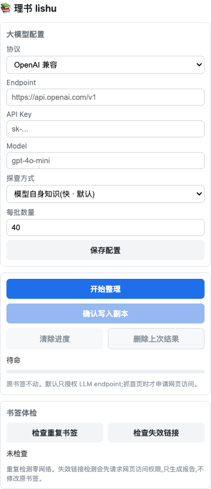

Preview before writing
Classification completes first. Lishu shows counts, quality score, and editable category names before it creates any output folder.
Local-first Chrome extension
Use your own LLM endpoint to classify years of Chrome bookmarks, review quality hints, adjust category names, and write a separate generated folder only after you confirm.

Lishu is not a cloud bookmark manager. It is a focused local tool for one job: turn a large, messy Chrome bookmark tree into a readable generated copy you can inspect, compare, and delete.
Classification completes first. Lishu shows counts, quality score, and editable category names before it creates any output folder.
Repeated URL detection is local-only. Dead-link checks are explicit, bounded, and report-only.
MIT licensed, provider examples included, privacy policy documented, and contribution paths explicit.
Until Chrome Web Store publishing is complete, install the release zip through Chrome developer mode.
Get the latest lishu-*.zip from GitHub Releases.
Unzip it, open chrome://extensions, enable Developer mode, and load the folder.
Enter your LLM endpoint, API key, model, and optional enrichment mode.
Start organizing, inspect the preview, adjust category names if needed, then confirm only if it looks useful.
Bookmark titles and URLs go only to the LLM endpoint you configure. Lishu has no backend service, no account, no telemetry, and no bundled provider key.
Review the provider, privacy, and category-quality notes before organizing a private bookmark collection.
Compare hosted, local, and private-gateway setups in the provider guide.
Confirm what data Lishu handles and where network requests go in the privacy policy.
Use the category review checklist before doing any manual cleanup.